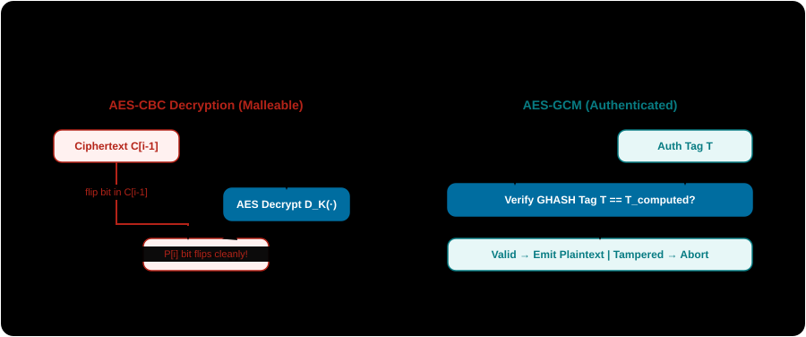
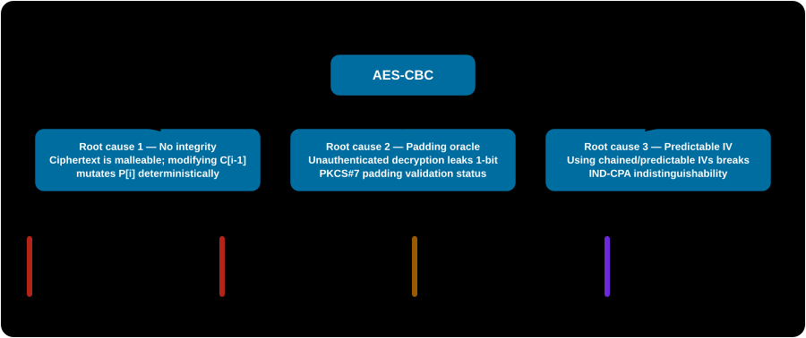
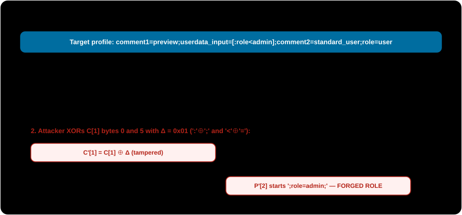
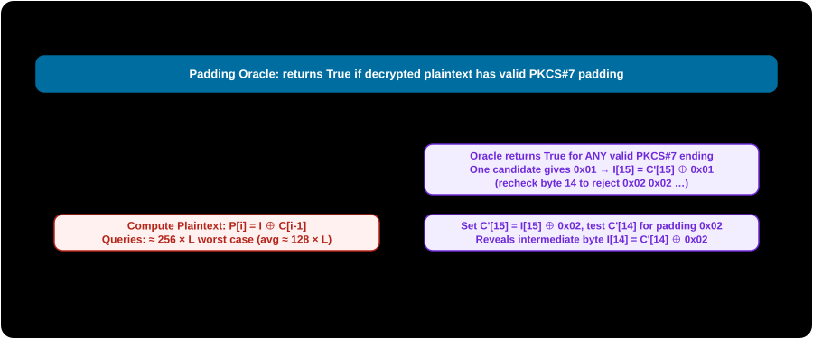
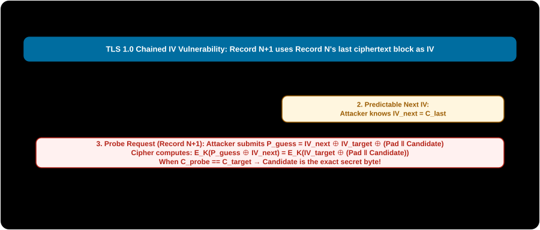
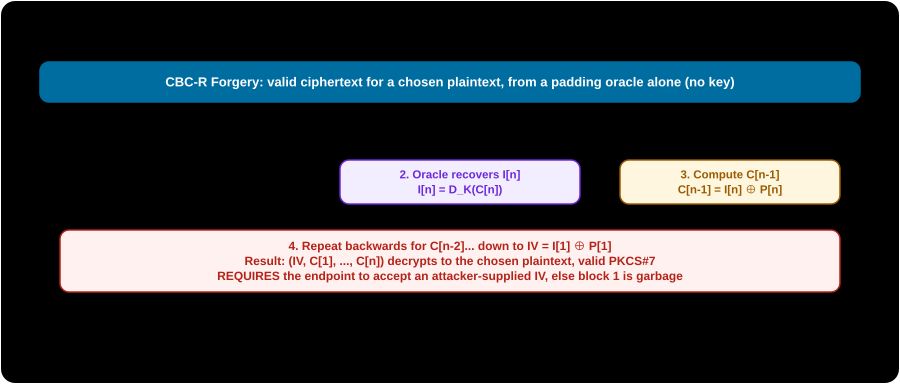

This page helps engineers and security reviewers recognize unsafe CBC deployments, understand the resulting exposure, and choose a proportionate fix. Every target is a self-contained browser simulation. Use these techniques only on systems you own or are explicitly authorized to assess.
How the weakness arises
In CBC mode, plaintext is partitioned into fixed 16-byte blocks (P₁, P₂, ..., Pₙ). The first block is XORed with an Initialization Vector (IV = C₀) before encryption under key K. Each subsequent block is XORed with the preceding ciphertext block before passing through the block cipher:
- Encryption:
Cᵢ = E_K(Pᵢ ⊕ Cᵢ₋₁)fori ≥ 1(whereC₀ = IV) - Decryption:
Pᵢ = D_K(Cᵢ) ⊕ Cᵢ₋₁fori ≥ 1(whereC₀ = IV)
NIST specifies CBC in SP 800-38A §6.2. Decryption operates in reverse: block cipher decryption D_K(Cᵢ) produces an intermediate state Iᵢ, which is XORed with Cᵢ₋₁ to yield Pᵢ. This mathematical relationship is the root of CBC's malleability: changing byte j of Cᵢ₋₁ produces an identical, deterministic change in byte j of Pᵢ.

Where the security boundary sits
CBC remains an approved confidentiality mode. NIST IR 8459 recommended not yet deprecating the SP 800-38A modes other than ECB, while also recognizing that confidentiality-only modes are unsafe when an adversary can modify ciphertext. Approval therefore does not turn CBC into an authenticated construction.
The practical boundary is direct. Every IV must be unpredictable, and any ciphertext that can be modified in storage or transit must be authenticated before decryption, unpadding, parsing, or plaintext release. New systems normally meet that requirement with an AEAD such as AES-GCM. A constrained legacy CBC format can use Encrypt-then-MAC with independent keys.
Three root causes, four attack vectors
Unauthenticated CBC's operational failures stem from three distinct root causes — two follow from its lack of integrity, and one is the strict requirement that every IV be unpredictable — creating four primary attack vectors:
- No ciphertext integrity / Malleability: Because
Pᵢ = D_K(Cᵢ) ⊕ Cᵢ₋₁, an attacker can modify ciphertext bytes to inject chosen changes into decrypted plaintext without triggering decryption errors. - Padding oracle side-channel feedback: Because CBC does not authenticate ciphertext before decryption, implementations must decrypt and unpad data (e.g. PKCS#7). Revealing whether padding is valid creates a 1-bit side channel that recovers complete plaintext.
- Predictable or chained IVs: CBC requires an unpredictable IV for every message. Reuse or predictable chaining lets an adversary test chosen-plaintext hypotheses and breaks confidentiality even when the ciphertext is authenticated.

Bit flipping can change trusted fields
When an application encrypts structured data (such as session cookies, URL query parameters, or database records) using CBC mode without a cryptographic MAC, an attacker can modify specific fields without knowing the encryption key. Modifying byte j of block Cᵢ₋₁ produces an exact bit-flip in byte j of block Pᵢ:
P'ᵢ[j] = D_K(Cᵢ)[j] ⊕ C'ᵢ₋₁[j] = D_K(Cᵢ)[j] ⊕ (Cᵢ₋₁[j] ⊕ Δ) = Pᵢ[j] ⊕ Δ
While block Pᵢ₋₁ is scrambled into pseudorandom bytes (D_K(C'ᵢ₋₁) ⊕ Cᵢ₋₂), target block Pᵢ receives the exact desired modification. Exploitation depends on the message format and parser. A corrupted block inside an ignored field may be tolerated; strict structure or schema validation can instead reject the message before the modified field has an effect.
A note on indexing: the relations above number blocks from 1 with C₀ = IV. The demonstration and its diagram number the 16-byte blocks from 0 with the IV kept separate, so the attacker's payload lands in block 2 (bytes 32–47) and the ciphertext block flipped to alter it is C[1] (bytes 16–31).

Change a role without the key
The server issues a CBC-encrypted token containing your input. We will flip bits in the preceding ciphertext block to forge ;role=admin; without ever knowing the server's AES key.
Printable ASCII only, up to 64 bytes. The input must start with the known :role<admin placeholder.
Padding feedback can reveal plaintext
Block ciphers require messages to be multiples of the block size, typically padded with PKCS#7 (RFC 5652 §6.3), where N padding bytes each equal N (e.g. 0x01 or 0x04 0x04 0x04 0x04). When an unauthenticated CBC endpoint decrypts ciphertext and indicates whether PKCS#7 padding was valid (through an HTTP error, exception type, or response timing), it acts as a padding oracle (Serge Vaudenay, EUROCRYPT 2002).
To decrypt block Cᵢ, an attacker crafts a probe block C'. Testing values 0..255 in the last byte of C', one candidate forces D_K(Cᵢ) ⊕ C' to end in 0x01. Other candidates can validate a longer padding pattern, so the attacker rechecks the result as described below. The confirmed candidate reveals Iᵢ[15] = C'[15] ⊕ 0x01, from which the original plaintext byte is Pᵢ[15] = Iᵢ[15] ⊕ Cᵢ₋₁[15]. The attacker then sets C'[15] = Iᵢ[15] ⊕ 0x02 and tests byte 14. For a ciphertext of L bytes, complete recovery requires at most about 256 × L probes plus disambiguation checks, averaging about 128 × L.
A padding oracle reports whether the whole block carries valid PKCS#7, so a second candidate can also return true when the recovered block ends in a longer valid padding pattern. A working attack must perturb the preceding byte and re-query. This page's implementation performs that check, which is why its query count can slightly exceed 256 × L.

Recover plaintext through padding feedback
The oracle holds a random AES key and encrypts the secret below. The decryption function only leaks whether PKCS#7 padding was valid. Recovery averages about 128 oracle calls per byte, so the default secret costs on the order of 8,000 real AES decryptions and runs for a noticeable stretch rather than instantly. The exact count is printed when it finishes; the text fills in as bytes are recovered.
Up to 80 UTF-8 bytes. The limit keeps the number of oracle operations bounded.
A predictable IV enables chosen-plaintext comparison
NIST SP 800-38A §6.2 states that for CBC mode the IV "need not be secret, but it must be unpredictable"; §5.3 and Appendix C repeat the requirement. (The document states its requirements with "must" rather than the RFC 2119 keyword "shall".) In SSL 3.0 and TLS 1.0 (RFC 2246), implementations chained IVs across records: the IV for record N+1 was set to the last ciphertext block of record N (IV_{N+1} = C_{last}).
As demonstrated by Thai Duong & Juliano Rizzo (2011) in the BEAST attack (CVE-2011-3389), a chosen-plaintext adversary (such as JavaScript running in a browser) who knows the predicted IV_{next} can evaluate guesses against a previously captured target ciphertext block C_{target}. Write B_{target} for the block that entered the cipher immediately before C_{target} — the preceding ciphertext block, or the record's own IV when the target sits first in the record. By submitting crafted plaintext P_{guess} = IV_{next} ⊕ B_{target} ⊕ (Known ∥ Candidate), the cipher encrypts E_K(P_{guess} ⊕ IV_{next}) = E_K(B_{target} ⊕ (Known ∥ Candidate)). The attacker chooses the request length so the unknown byte lands last in its block, making Known the 15 bytes already recovered. When the candidate is correct, the resulting ciphertext matches C_{target}, breaking IND-CPA security and extracting secret session cookies one byte at a time.

Recover a session value from a chained IV
Simulates a TLS 1.0 connection where each request's IV is predictable (chained from the previous record's last block). Each byte costs one capture request plus up to 95 probe requests while the secret is printable ASCII, and up to 256 otherwise — so a full session cookie takes tens of seconds, and longer cookies take proportionally longer.
Printable ASCII only, up to 32 bytes. The historical attack simulation is byte-oriented.
A padding oracle can also forge ciphertext
Padding oracles do not merely enable decryption — they enable arbitrary ciphertext forgery. Vaudenay's 2002 paper established padding-oracle decryption; the forgery technique, named CBC-R, was introduced eight years later by Rizzo & Duong at USENIX WOOT 2010, who describe it as their own contribution ("We call it CBC-R encryption"). An attacker with access only to a decryption verification oracle can generate valid ciphertext for any chosen plaintext message without possessing the secret key and without calling an encryption function.
The attacker works backwards from the last block Pₙ:
- Pick an arbitrary random block for
Cₙ. - Use the padding oracle to recover the intermediate state
Iₙ = D_K(Cₙ). - Compute previous ciphertext block
Cₙ₋₁ = Iₙ ⊕ Pₙ(sinceD_K(Cₙ) ⊕ Cₙ₋₁ = Pₙ). - Use
Cₙ₋₁as the new target block and repeat to findIₙ₋₁ = D_K(Cₙ₋₁)and computeCₙ₋₂ = Iₙ₋₁ ⊕ Pₙ₋₁. - Repeat backwards until block 1: compute
IV = C₀ = I₁ ⊕ P₁.
The synthesized tuple (IV, C₁, C₂, ..., Cₙ) decrypts cleanly to the attacker's chosen plaintext, carrying valid PKCS#7 padding.
Step 5 computes an IV rather than accepting one. CBC-R lands every block as chosen only when the endpoint reads the IV from attacker-supplied data, usually a ciphertext prefix. With a fixed or server-side IV, the first plaintext block is garbled and validation of a header or magic number can reject the message. Rizzo and Duong describe limited workarounds, but none is general. The demonstration supplies its own IV and therefore shows the favorable case.

Forge chosen plaintext with CBC-R
Type any chosen plaintext. The attack will synthesize a valid CBC ciphertext using ONLY the decryption padding oracle — zero key access.
Printable ASCII only, up to 80 bytes. The limit bounds the oracle work.
How to find the same weakness
Defenders should audit cryptographic usage across runtime traffic and source repositories. Active probing belongs only in an authorized test environment because malformed ciphertext can disrupt applications, trigger defenses, or expose real user data.
- Black-box detection:
- Test endpoints for padding oracle side channels: submit modified ciphertext blocks with invalid padding bytes and observe differences in HTTP status codes (500 vs 200/400), error descriptions (e.g.
BadPaddingException,CryptographicException), or response latency. - Inspect IV predictability: check whether successive encrypted messages share IVs or use sequential counters / previous ciphertext blocks as IVs.
- Test endpoints for padding oracle side channels: submit modified ciphertext blocks with invalid padding bytes and observe differences in HTTP status codes (500 vs 200/400), error descriptions (e.g.
- White-box code review:
- Grep codebases for unauthenticated CBC usages:
/CBC/,modes.CBC(,AES/CBC/PKCS5Padding,AES/CBC/PKCS7Padding, oropenssl_encrypt('aes-128-cbc', ...)without an associated HMAC tag verification. - Inspect TLS configurations: disable TLS 1.0 and TLS 1.1; enforce TLS 1.3 or TLS 1.2 with AEAD ciphersuites (e.g.
ECDHE-RSA-AES128-GCM-SHA256) and disable CBC ciphersuites.
- Grep codebases for unauthenticated CBC usages:
Uniform errors and unsuccessful test payloads do not prove that ciphertext is authenticated. The signal may exist only in timing, another code path, or a downstream parser. Confirm the construction in code and verify that authentication succeeds before any decryption, unpadding, parsing, or plaintext release.
The fix authenticates the ciphertext
Use an authenticated encryption mode for new designs. Keep CBC only when an existing format, device, or protocol prevents replacement, and then use Encrypt-then-MAC with independent encryption and MAC keys. Both choices close the demonstrated integrity gap, but the composed option leaves more decisions for the application to implement correctly.
Option A uses an AEAD
AES-GCM (SP 800-38D) and ChaCha20-Poly1305 (RFC 8439) combine confidentiality and integrity in one primitive. A correct receiver verifies the tag before releasing plaintext, so an altered ciphertext, nonce, or associated-data field fails authentication instead of reaching application parsing.
Associated data is authenticated but not encrypted. Bind the format version, record identity, recipient, and other routing context there so an attacker cannot change those values without invalidating the tag.
Option B keeps CBC and adds Encrypt-then-MAC
Where CBC must remain, compute a MAC over the IV, ciphertext, and relevant context using a key independent from the encryption key. The receiver verifies the tag in constant time before CBC decryption or PKCS#7 unpadding.
- Authenticate the IV and ciphertext together. Leaving the IV outside the tag preserves an attacker-controlled input to the first plaintext block.
- Verify before decrypting. Invalid input must never reach the unpadding or parser code, and every rejection should expose the same response.
- Do not substitute MAC-then-Encrypt. That ordering requires decryption and unpadding before tag verification, preserving the processing window measured by Lucky Thirteen. RFC 7366 standardized Encrypt-then-MAC for TLS and DTLS CBC ciphersuites for this reason.
Migrating a format that is already deployed
A safe migration needs an explicit format version. New writes should use AEAD immediately. Reads may temporarily accept the legacy format, but only through a narrowly scoped compatibility path that decrypts existing CBC data and rewrites it under AEAD after successful application-level validation.
- Inventory every producer, consumer, key, IV construction, and stored ciphertext format.
- Add an authenticated version marker and bind it, together with record identity and other metadata, as associated data.
- Stop legacy writes. Re-encrypt stored records in a controlled batch or on successful read, while measuring the remaining legacy population.
- Retire the CBC read path and its keys only after the legacy count reaches zero and rollback requirements expire.
Adding a MAC to ciphertext that already exists does not prove that the old value was never altered. Treat legacy plaintext as unverified until the application validates its structure and meaning during migration.
Reject the same tampering with AES-GCM
Encrypt a token under AES-GCM, flip a ciphertext bit, and watch the authenticated cipher reject tampering.
Authentication does not remove operating limits
An authentication tag closes CBC's malleability and padding-oracle gap, but the replacement still depends on nonce uniqueness, key separation, format binding, and timely rekeying. A sound primitive can fail when those operating conditions are not enforced across the whole system.
Nonce uniqueness
Reusing a (key, nonce) pair in AES-GCM breaks confidentiality and can expose enough authentication state to enable forgery (Böck et al., USENIX WOOT 2016).
NIST SP 800-38D §8 sets the governing requirement — the probability of ever reusing an (IV, key) pair "shall be no greater than 2−32" — and §8.2 defines two constructions that meet it:
- Deterministic IV (§8.2.1): a fixed device/context field concatenated with an invocation counter. 96-bit deterministic IVs are exempt from the global cap below, but not from any cap: §8.3 states that the constraint applies "to any supported IV length, including 96 bits", and that with an
s-bit invocation field the function "cannot be invoked on more than 2s distinct input sets". Under NIST's suggested 96-bit layout (32-bit fixed field, 64-bit invocation field) that ceiling is 264. - RBG-based Random IV (§8.2.2): a random field of at least 96 bits from an approved RBG, optionally followed by a free field. Here §8.3 does impose the global cap: the total number of invocations of the authenticated encryption function "shall not exceed 232 … with the given key", counting every IV length and every instance.
Both ceilings are uniqueness budgets, not performance advice. Whichever construction is chosen, rekey before the budget is spent — an exhausted counter or a repeated random field is a (key, nonce) collision, which is the failure mode described above.
Misuse resistance is bounded
Where nonce management is difficult or state cannot be guaranteed across distributed nodes, AES-GCM-SIV (RFC 8452) limits the damage from accidental nonce reuse. It does not make key management, associated-data design, or rekeying optional.
Where the standards are heading
TLS 1.3 removed CBC ciphersuites and requires authenticated encryption for record protection. NIST has not yet deprecated CBC, but IR 8459 identifies the missing-integrity boundary and NIST is revising SP 800-38A to add authentication guidance. The direction is authentication by construction, not a claim that every historical CBC use is automatically exploitable.
Standards status, September 2026. SP 800-38D remains NIST's published GCM recommendation. NIST is revising it and has proposed removing support for authentication tags shorter than 96 bits. Track the revision project rather than treating the current text as permanent.
Primary references
- NIST SP 800-38A §6.2 — Recommendation for Block Cipher Modes of Operation: Methods and Techniques (CBC mode definition; the IV "must be unpredictable", also stated in §5.3 and Appendix C).
- NIST SP 800-38D §8 — Recommendation for Block Cipher Modes of Operation: Galois/Counter Mode (GCM). §8 sets the 2−32 IV-reuse bound; §8.2 defines the two IV constructions and §8.3 their invocation ceilings.
- RFC 8446 — The Transport Layer Security (TLS) Protocol Version 1.3 (removal of CBC mode in favor of mandatory AEAD).
- RFC 5652 §6.3 — Cryptographic Message Syntax padding definition.
- RFC 7366 — Encrypt-then-MAC for TLS and DTLS CBC ciphersuites.
- RFC 8439 — ChaCha20-Poly1305 authenticated encryption.
- RFC 8452 — AES-GCM-SIV misuse-resistant authenticated encryption.
- Serge Vaudenay, EUROCRYPT 2002 — Security Flaws Induced by CBC Padding — Applications to SSL, IPSEC, WTLS.
- Juliano Rizzo & Thai Duong, USENIX WOOT 2010 — Practical Padding Oracle Attacks. Origin of the CBC-R forgery technique and source of the IV-control limitation explained above.
- Thai Duong & Juliano Rizzo (2011) — Here Come The ⊕ Ninjas (The BEAST Attack). Netifera white paper, 13 May 2011, presented at ekoparty 2011; not a refereed proceedings paper. Archived copy — the original netifera.com host is offline.
- AlFardan and Paterson (2013) — Lucky Thirteen timing attacks against TLS and DTLS CBC.
- Böck et al., USENIX WOOT 2016 — Nonce reuse and GCM authentication-key recovery.
- NIST IR 8459 — Current review of the NIST block-cipher mode standards.